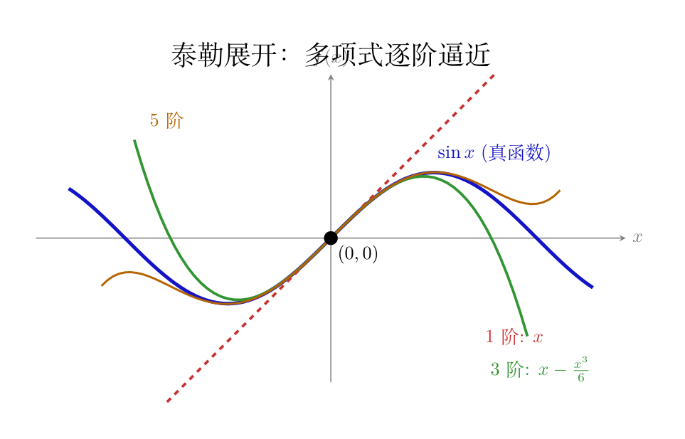

画面： 你有一条弯弯曲曲的曲线 $f(x)$，太复杂了不好算。你想找一条简单的多项式来代替它——至少在某个点 $x=a$ 附近，让它和原曲线"长得很像"。
怎么做到？一层一层地逼近：
第 0 级——常数近似：经过同一点。 最简单的近似就是一条水平线，让它和原曲线在 $x=a$ 处相交：
$$f(x) \approx f(a)$$这就保证了两条线经过同一点。但在那点附近，水平线很快就偏离了原曲线——因为原曲线有坡度，水平线没有。
第 1 级——线性近似：切线。 加上坡度修正：让近似曲线不仅经过同一点，而且在 $x=a$ 处的斜率也一样：
$$f(x) \approx f(a) + f'(a)(x-a)$$这就是切线方程。两条线现在相切——既经过同一点，又有同样的坡度。在 $x=a$ 极近处，切线已经非常接近原曲线了。但稍微走远一点，切线是直的，原曲线却是弯的——两者还是会分开。
第 2 级——二次近似：加上弯曲。 再加一个"弯曲修正项"，让近似曲线在 $x=a$ 处的二阶导数（弯曲程度）也和原曲线一样：
$$f(x) \approx f(a) + f'(a)(x-a) + \frac{f''(a)}{2}(x-a)^2$$二次项 $(x-a)^2$ 是一条抛物线——它天然有弯曲。现在两条线在 $x=a$ 处：经过同一点 ✓、坡度相同 ✓、弯曲程度相同 ✓。附近的一小段几乎完全重合。
第 n 级——无限逼近。 继续加三阶、四阶……每一项让更高阶的导数也匹配：
$$f(x) = f(a) + f'(a)(x-a) + \frac{f''(a)}{2!}(x-a)^2 + \frac{f'''(a)}{3!}(x-a)^3 + \cdots$$$n!$ 出现在分母是因为每次求导会带下来一个因子（$(x-a)^n$ 的 $n$ 阶导数是 $n!$），系数里除以 $n!$ 正好消掉。
泰勒展开的威力： 如果 $f$ 无限可导，这个无穷级数精确等于原函数（在收敛半径内）。实践中，我们通常只取前几项就够用了——比如中央差分只用到二阶展开，已经足够让 $\epsilon^2$ 项抵消。

import numpy as np
# ===== 数值微分：用代码算坡度 =====
def num_grad(f, x, eps=1e-5):
pass
"""中央差分：往前走一丁点，往后退一丁点，算平均坡度
(f(x+eps)-f(x-eps)) / (2*eps)
精度比单边高：单边只看"往前"，中央看了"前后"然后取平均，误差抵消了一部分
"""
return (f(x + eps) - f(x - eps)) / (2 * eps)
# 测试 f(x)=x²，理论导数 = 2x
def sq(x):
return x ** 2
for x in [1, 2, 3]:
# 数值近似
n = num_grad(sq, x)
# 理论：f'(x)=2x
t = 2 * x
print(f"数值={n:.6f} 理论={t:.0f}")
# 数值近似
n = num_grad(sq, x)
# 理论：f'(x)=2x
t = 2 * x
print(f"f'({x}) 数值={n:.6f} 理论={t}")
# ===== 梯度下降：从山顶走到山谷 =====
# f(x)=x²-4x+4 的最小值在 x=2（f'(x)=2x-4=0 → x=2）
# 站在 x=0 的位置
x = 0.0
# 学习率：每步走 0.1 倍的坡度
lr = 0.1
print(f"\n从 x=0 出发，目标 x=2")
for step in range(30):
# 当前位置的坡度
grad = 2*x - 4
# 沿着坡度反方向走一步
x = x - lr * grad
if step % 5 == 0:
print(f" 第{step:2d}步: x={x:.4f} 坡度={grad:+.4f}")
# 坡度从 -4 逐渐变成 0，x 从 0 逐渐滑到 2代码注释说「误差抵消了一部分」——到底怎么抵消的？用泰勒展开来算。
单边差分（只看往前）：
$$f(x+\epsilon) = f(x) + \epsilon f'(x) + \frac{\epsilon^2}{2} f''(x) + \frac{\epsilon^3}{6} f'''(x) + O(\epsilon^4)$$移项：
$$\frac{f(x+\epsilon)-f(x)}{\epsilon} = f'(x) + \underbrace{\frac{\epsilon}{2}f''(x) + O(\epsilon^2)}_{\text{误差项：首项是 } O(\epsilon)}$$误差的主导项是 $\frac{\epsilon}{2}f''(x)$——和 $\epsilon$ 成正比。$\epsilon$ 缩小 10 倍，误差大约缩小 10 倍。
中央差分（看前后）：写出 $f(x+\epsilon)$ 和 $f(x-\epsilon)$ 两个泰勒展开：
$$ \begin{aligned} f(x+\epsilon) &= f(x) + \epsilon f'(x) + \frac{\epsilon^2}{2} f''(x) + \frac{\epsilon^3}{6} f'''(x) + \frac{\epsilon^4}{24} f''''(x) + \cdots \\[4pt] f(x-\epsilon) &= f(x) - \epsilon f'(x) + \frac{\epsilon^2}{2} f''(x) - \frac{\epsilon^3}{6} f'''(x) + \frac{\epsilon^4}{24} f''''(x) - \cdots \end{aligned} $$相减：$f(x+\epsilon) - f(x-\epsilon)$：
关键：相减时 $\epsilon^2$ 项同号抵消了！剩余误差主导项是 $\frac{\epsilon^2}{6}f'''(x)$——和 $\epsilon^2$ 成正比。$\epsilon$ 缩小 10 倍，误差缩小 100 倍。这就是为什么中央差分比单边差分高一个精度量级。
直观理解：单边差分就像只看了看你前方一毫米的地形，就猜整条路的坡度——局部信息有限。中央差分同时看了前方和后方，左右信息对称，把「地形弯曲」带来的偏差对消掉了。